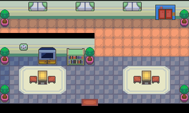

047 诡异的绿光
一句话目标：查明满金市住宅区北部公寓夜里出现诡异绿光的真相。
接取地点
- 满金市住宅区北部公寓（地图 56:10），公寓管理员（local_id 1/2，约 (11,7)–(11,8)）。
- 当前目录描述：查明公寓内出现诡异的绿光的真相。
- 旧表说明（同一旗标）：住宅区北部的公寓最近在夜晚时总是会出现诡异的绿光，希望有人可以帮忙调查一下。
准备条件
- 需先看过“支援请求”（接取分支
0x08AE974A检查旗标 4246，其来源未在包内定位）。 - 行动需在夜晚进行；脚本检查旗标 5548，白天只提示“我们还是等到晚上再行动吧”。
操作步骤
- 到公寓 (56:10) 找管理员，他说“最近公寓晚上总是会出现诡异的绿光，让租客们有些担心是不是幽灵在作祟……请问你可以帮我找到这个绿光的来源吗？”。
- 答应后出现「接受任务:<诡异的绿光>」（接取旗标 5959）。
- 等到夜晚再与管理员对话，他说“到晚上了。怎么样，你准备好了吗？”，答应后进入公寓内部（地图 56:14）。
- 在公寓内部跟进超音蝠的踪迹：它依次在几处出现并发出“吱吱吱！”（脚本按临时旗标 22/23/24 逐段推进）。
- 追到尽头触发与野生超音蝠的战斗（物种 41，Lv12，携带金珠 110）。战斗结束提示“这就是绿光的源头吗？去找公寓的管理员汇报一下吧。”并自动回到 (56:10)。
- 回公寓 (56:10) 向管理员汇报，他说原来是因为这只绿色的超音蝠，怪不得最近大家运气都变好、常在角落捡到隐藏道具，“原来是‘蝠到了’呀”，谢谢你并送出经验糖果S 0537 ×1，任务结算完成。
- （后续）完成后再找管理员，他会问起那只超音蝠；若队伍中已有叉字蝠 0169，他会让宝可梦学习“顺风”（旗标 5962）。
交付检查
- 汇报后由脚本
0x08AE988A置完成旗标 5961 并结算。
奖励
- 经验糖果S 0537 ×1
- 4000$
- 3 BracerPoints
容易卡住的位置
- 必须在夜晚再找管理员，白天只会让你等到晚上（旗标 5548）。
- 绿光来源为野生超音蝠；
setwildbattle只证明战斗设置，不能据此断言必定可捕捉。 - “顺风”教学是完成后的额外内容，需要带着叉字蝠（169）才会触发（species 检查）。
来源与待补字段
- 来源包：data/quest_packets/047.json；接取脚本
0x08AE976F、0x08AE979A，夜晚入口0x08AE97CE、0x08AE9AB7，内部追踪0x08AE9B4B、0x08AE9B83、0x08AE9BBB、0x08AE9EBC，汇报结算0x08F586F7、0x08AE988A，顺风教学0x08AE9CFA、0x08AE9D23。 - 待补：旗标 4246（支援请求）与 5548（夜晚）的设置来源未在包内定位；相关宝可梦：超音蝠、叉字蝠。
地点地图
共享RGB底图；点击可缩放定位。数字对应本页相关地点，不代表地图上全部事件。
满金市

1 诡异的绿光（11,7）
满金市

地图范围记录：当前资料没有精确人物／遭遇坐标。